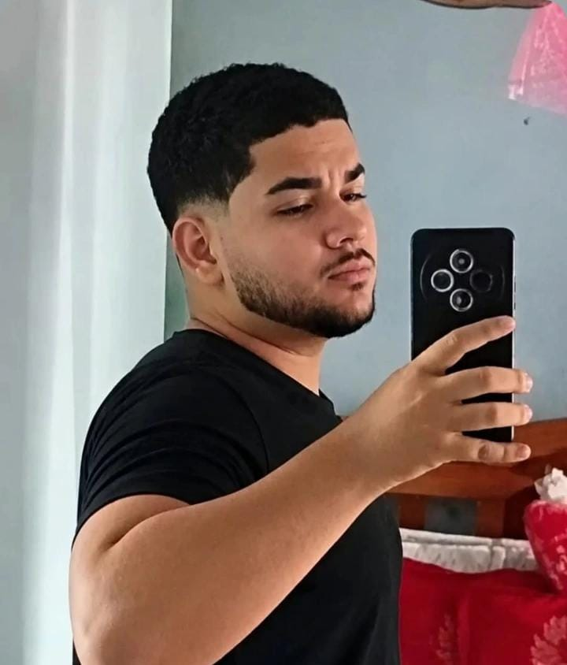
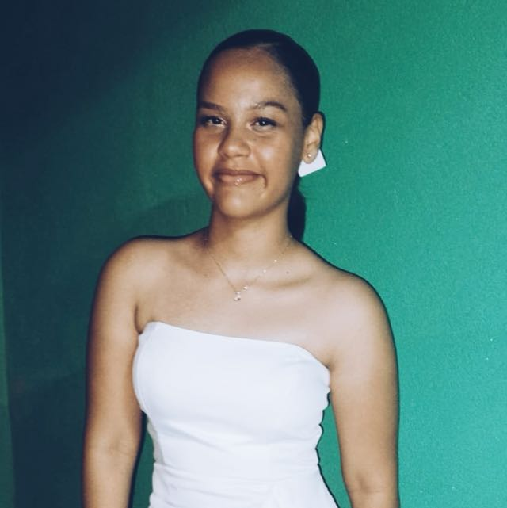
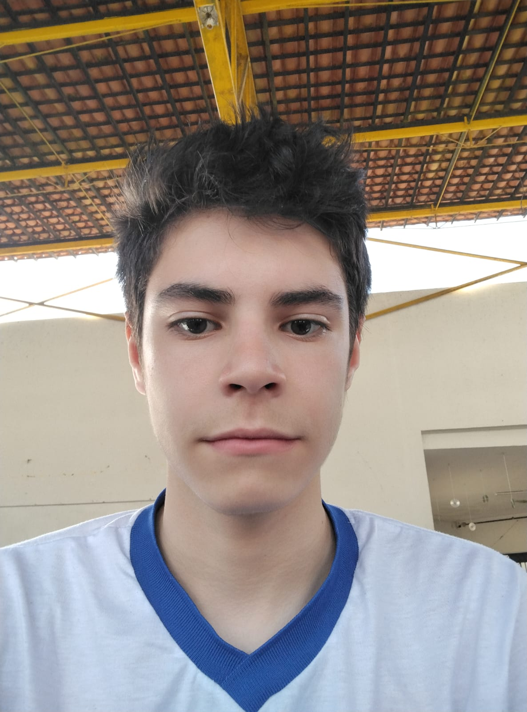
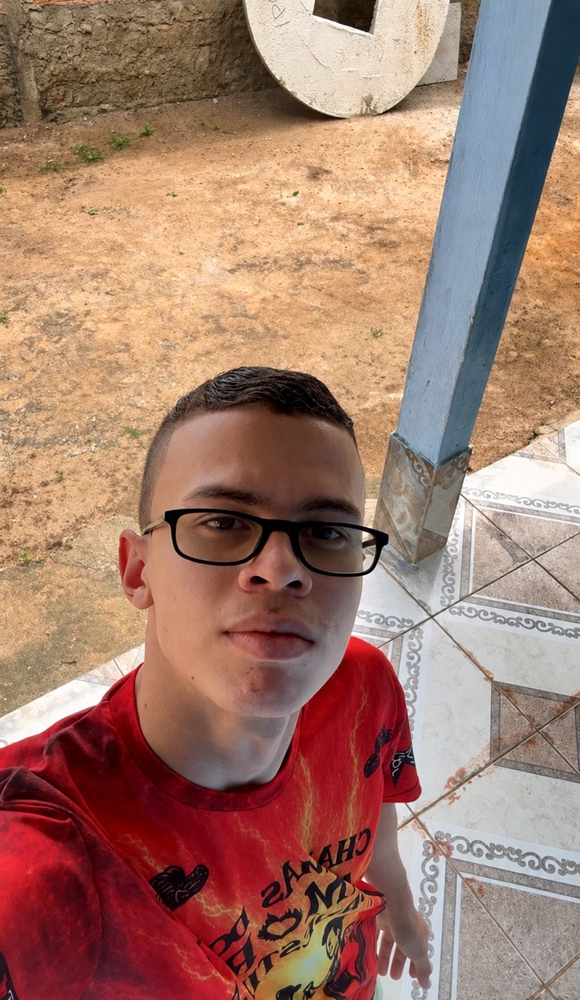
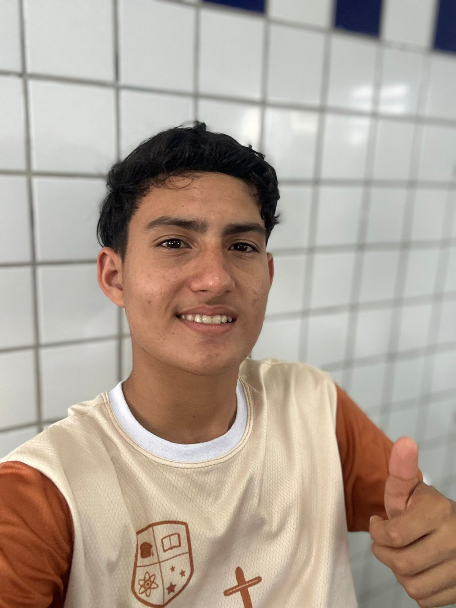
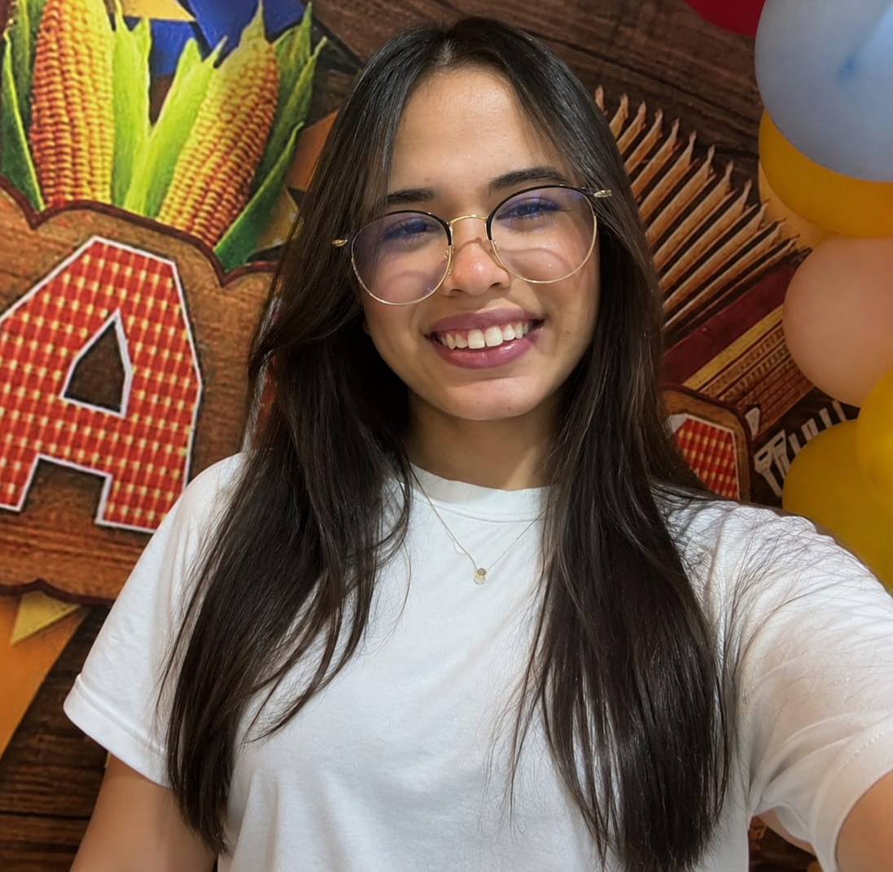

Feira de Ciências - 9 de setembro de 2026
A CIÊNCIA DO BRASIL, UM ESTADO POR TURMA.
Cada turma da escola escolheu um estado brasileiro e vai apresentar a ciênciaa que nasce ali - com pelo menos um experimento de fisica, quimica ou biologia, feito à mão. Esse site reúne todos os trabalhos da feira num lugar só.
estados: 23
turmas: 23
experimentos: 23+
cada turma, um trabalho. cada trabalho, um experimento.
ciencia que dá pra ver, tocar e explicar.
O PROJETO
De onde vem esta feira
[Espaço para apresentar o projeto. Preencha com o texto de vocês — o que é, quem organiza e qual o objetivo da feira.]
O que é
Uma feira em que cada turma apresenta a ciência de um estado brasileiro, no dia 9 de setembro.
Como funciona
Cada turma pesquisa o seu estado e prepara um experimento prático de física, química ou biologia.
Este site
Feito à mão pela turma de programação web, reúne todos os trabalhos da feira num só lugar.
Os estados
Explore a feira, estado por estado
a pessoa pro tras da pesquisa: quem orienta e quem investiga.

Marcos Silva Barbosa
[uma linha sobre a informação ou papel no projeto.]
Coordenador
Fernando Jorge Siqueira Cavalcante
[uma linha sobre a informação ou papel no projeto.]
Coorientador(a)

Eduina Bizerra França Cavalcante
[uma linha sobre a informação ou papel no projeto.]
Coorientador(a)

Carlos Victor Leite dos Santos
[uma linha sobre a informação ou papel no projeto.]
Estudante

Vitória Tais dos Santos Silva
[uma linha sobre a informação ou papel no projeto.]
Estudante

Laura Joana da Silva Santos
[uma linha sobre a informação ou papel no projeto.]
Estudante

Matheus Lucas Carvalho Santos
[uma linha sobre a informação ou papel no projeto.]
Estudante

Huan Matheus dos Santos Silva
[uma linha sobre a informação ou papel no projeto.]
Estudante

Luiz Henrique Bispo dos Santos
[uma linha sobre a informação ou papel no projeto.]
Estudante

Jainny Ketilly dos Santos
[uma linha sobre a informação ou papel no projeto.]
Estudante

Antônio Douglas dos Santos Barros
[uma linha sobre a informação ou papel no projeto.]
Estudante

Nataly da Silva Soares
[uma linha sobre a informação ou papel no projeto.]
Estudante

Maria Jussara Cavalcante dos Santos
[uma linha sobre a informação ou papel no projeto.]
Estudante

Laysa Eduarda De Melo Silva
[uma linha sobre a informação ou papel no projeto.]
Estudante
O trabalho
o que estamos investigando
[um paragrafo explicando sobre o projeto de forma acessivel.
O que se pretende descobrir ou construir.]
objetivos
aonde queremos chegar
[o que o projeto pretende alcançar. seja concreto:o resultado esperado no fim da pesquisa.
justificativa
por que isso importa
[por que vale a pena estudar isso. qual problema resolve para quem e para que.]
vinculo
onde o projeto vive
[a ligação com a escola, com o programa PIBIC Jr
e com as instituições envolvidas.]